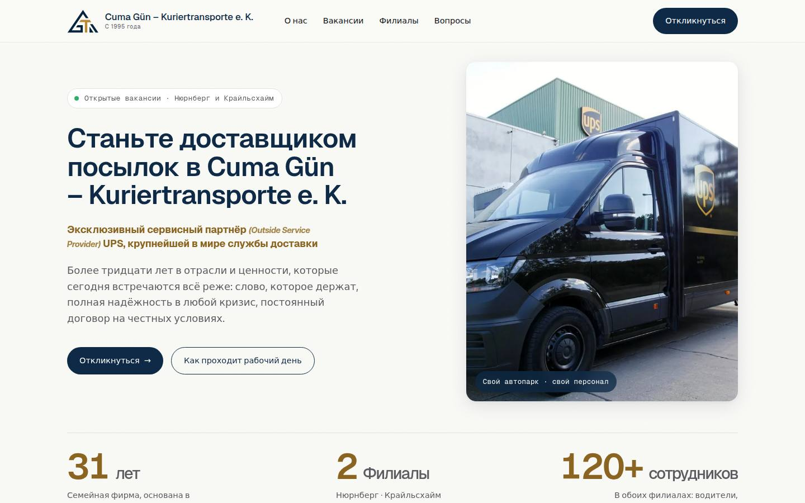
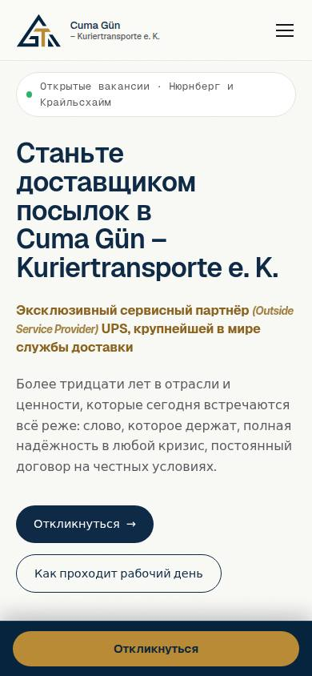

сдано Проект для клиента
Cuma Gün – Kuriertransporte e. K.
Вакансии в двух городах → каждый отклик сам приходит на почту нужного города.
180+ автоматических проверок перед сдачей
Перевод для показа — сайт клиента на немецком.
Как это сделано
Карьерный сайт курьерской компании из Нюрнберга и Крайльсхайма
- ЗадачаВакансии в двух городах — Нюрнберге и Крайльсхайме.
- СделаноКарьерный сайт и форма отклика с файлами.
- ИтогКаждый отклик сам уходит на почту нужного города.
- 2города, Нюрнберг и Крайльсхайм
- 1 формазаявка с файлами сразу на почту нужного города
- 180+автоматических проверок перед сдачей
Сдан клиенту 07.10.2026 · запуск на guen-transporte.de
Что можно добавить
- Сделаю онлайн-запись на собеседование
- Сделаю бота, который отвечает кандидатам на типовые вопросы
- Сделаю автоматическую сводку всех откликов

